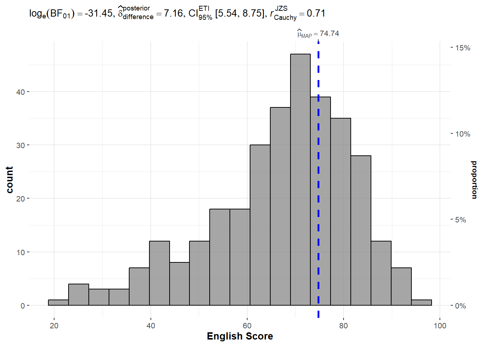

pacman::p_load(tidyverse, ggstatsplot)Hands-on Exercise 4 - Visual Statistical Analysis
1. Overview
In the second part of the fourth lesson, we learn to use the ggstatsplot package to create visual graphics with statistical information. We will first explore some techniques with the Exam dataset before applying them to the Toyota Corolla case study.
2. Exploring Exam Dataset
2.1. Getting Starting
2.1.1. Installing and Loading Packages
We will use ggstatsplotin addition totidyverse for this exercise:
The packages to be used can be installed and loaded into the R environment using the p_load() function from the pacman package:
2.1.2. Import Data
Next, we will read the data provided by the Course Instructor into the R environment. We will use the read_csv() function from the readr package found in tidyverse.
exam_data <- read_csv("data/Exam_data.csv")
glimpse(exam_data)Rows: 322
Columns: 7
$ ID <chr> "Student321", "Student305", "Student289", "Student227", "Stude…
$ CLASS <chr> "3I", "3I", "3H", "3F", "3I", "3I", "3I", "3I", "3I", "3H", "3…
$ GENDER <chr> "Male", "Female", "Male", "Male", "Male", "Female", "Male", "M…
$ RACE <chr> "Malay", "Malay", "Chinese", "Chinese", "Malay", "Malay", "Chi…
$ ENGLISH <dbl> 21, 24, 26, 27, 27, 31, 31, 31, 33, 34, 34, 36, 36, 36, 37, 38…
$ MATHS <dbl> 9, 22, 16, 77, 11, 16, 21, 18, 19, 49, 39, 35, 23, 36, 49, 30,…
$ SCIENCE <dbl> 15, 16, 16, 31, 25, 16, 25, 27, 15, 37, 42, 22, 32, 36, 35, 45…Using glimpse to view the data, it is observed that the data contains the examination grades of a batch of primary 3 students for the subjects English, Maths, and Science.
2.2. One-Sample Test Using gghistostats()
In this example, we use gghistostats() to build a visual of a one-sample test on English score:
set.seed(1234)
gghistostats(data = exam_data,
x = ENGLISH,
type = "bayes",
test.value = 60,
xlab = "English Score")
Note
- A Bayes factor is the ratio of the likelihood of one hypothesis to the likelihood to another. It can be interpreted as a measure of the strength of evidence in favour of one theory among two competing theories.
2.3. Two-Sample Mean Test Using ggbetweenstats()
In this example, we use ggbetweenstats() to build a visual of a two-sample mean test of Maths score by gender:
ggbetweenstats(data = exam_data,
x = GENDER,
y = MATHS,
type = "np",
messages = FALSE)
2.4. One-Way ANOVA Test Using ggbetweenstats()
In this example, we use ggbetweenstats() to build a visual of a one-way ANOVA test of English score by race:
ggbetweenstats(data = exam_data,
x = RACE,
y = ENGLISH,
type = "p",
mean.ci = TRUE,
pairwise_comparisons = TRUE,
pairwise.display = "s",
p.adjust.method = "fdr",
messages = FALSE)
Tip
“ns” = only non-significant
“s” = only significant
“all” = everything
2.5. Significant Test of Correlation Using ggscatterstats()
In this example, we use ggscatterstats() to build a visual of a significant test of correlation between Maths and English scores:
ggscatterstats(data = exam_data,
x = MATHS,
y = ENGLISH,
marginal = FALSE)
2.6. Significant Test of Association (Dependence) Using ggbarstats()
In this example, we use ggbarstats() to build a visual of a significant test of association after binning maths scores into a 4-class variable:
exam1 <- exam_data %>%
mutate(MATHS_bins = cut(MATHS,
breaks = c(0,60,75,85,100)))
ggbarstats(data = exam1,
x = MATHS_bins,
y = GENDER)
3. Toyota Corolla Case Study
Using this case study, we will learn to visualise model diagnostic and model parameters by using the parameters package. The purpose of this study is to build a model to discover factors that affect prices of used-cars.
3.1. Getting Starting
3.1.1. Installing and Loading Packages
We will load additional packages to be used into the R environment using the p_load() function from the pacman package:
pacman::p_load(readxl, performance, parameters, see)3.1.2. Import Data
Next, we will read the data provided by the Course Instructor into the R environment. We will use the read_xls() function from the readxl package.
car_resale <- read_xls("data/ToyotaCorolla.xls",
"data")
glimpse(car_resale)Rows: 1,436
Columns: 38
$ Id <dbl> 81, 1, 2, 3, 4, 5, 6, 7, 8, 44, 45, 46, 47, 49, 51, 6…
$ Model <chr> "TOYOTA Corolla 1.6 5drs 1 4/5-Doors", "TOYOTA Coroll…
$ Price <dbl> 18950, 13500, 13750, 13950, 14950, 13750, 12950, 1690…
$ Age_08_04 <dbl> 25, 23, 23, 24, 26, 30, 32, 27, 30, 27, 22, 23, 27, 2…
$ Mfg_Month <dbl> 8, 10, 10, 9, 7, 3, 1, 6, 3, 6, 11, 10, 6, 11, 11, 11…
$ Mfg_Year <dbl> 2002, 2002, 2002, 2002, 2002, 2002, 2002, 2002, 2002,…
$ KM <dbl> 20019, 46986, 72937, 41711, 48000, 38500, 61000, 9461…
$ Quarterly_Tax <dbl> 100, 210, 210, 210, 210, 210, 210, 210, 210, 234, 234…
$ Weight <dbl> 1180, 1165, 1165, 1165, 1165, 1170, 1170, 1245, 1245,…
$ Guarantee_Period <dbl> 3, 3, 3, 3, 3, 3, 3, 3, 3, 3, 3, 3, 3, 3, 3, 3, 3, 3,…
$ HP_Bin <chr> "100-120", "< 100", "< 100", "< 100", "< 100", "< 100…
$ CC_bin <chr> "1600", ">1600", ">1600", ">1600", ">1600", ">1600", …
$ Doors <dbl> 5, 3, 3, 3, 3, 3, 3, 3, 3, 5, 5, 5, 5, 5, 5, 5, 3, 3,…
$ Gears <dbl> 5, 5, 5, 5, 5, 5, 5, 5, 5, 5, 5, 5, 5, 5, 5, 5, 5, 5,…
$ Cylinders <dbl> 4, 4, 4, 4, 4, 4, 4, 4, 4, 4, 4, 4, 4, 4, 4, 4, 4, 4,…
$ Fuel_Type <chr> "Petrol", "Diesel", "Diesel", "Diesel", "Diesel", "Di…
$ Color <chr> "Blue", "Blue", "Silver", "Blue", "Black", "Black", "…
$ Met_Color <dbl> 1, 1, 1, 1, 0, 0, 0, 1, 1, 0, 0, 0, 1, 1, 1, 1, 1, 1,…
$ Automatic <dbl> 1, 0, 0, 0, 0, 0, 0, 0, 0, 0, 0, 0, 0, 0, 0, 0, 0, 0,…
$ Mfr_Guarantee <dbl> 0, 0, 0, 1, 1, 1, 0, 0, 1, 1, 1, 0, 0, 1, 1, 1, 0, 1,…
$ BOVAG_Guarantee <dbl> 0, 1, 1, 1, 1, 1, 1, 1, 1, 1, 1, 1, 1, 1, 1, 1, 1, 1,…
$ ABS <dbl> 1, 1, 1, 1, 1, 1, 1, 1, 1, 1, 1, 1, 1, 1, 1, 1, 1, 1,…
$ Airbag_1 <dbl> 1, 1, 1, 1, 1, 1, 1, 1, 1, 1, 1, 1, 1, 1, 1, 1, 1, 1,…
$ Airbag_2 <dbl> 1, 1, 1, 1, 1, 1, 1, 1, 1, 1, 1, 1, 1, 1, 1, 1, 1, 1,…
$ Airco <dbl> 1, 0, 1, 0, 0, 1, 1, 1, 1, 1, 1, 1, 1, 1, 1, 1, 1, 1,…
$ Automatic_airco <dbl> 1, 0, 0, 0, 0, 0, 0, 0, 0, 0, 0, 1, 0, 0, 0, 1, 0, 1,…
$ Boardcomputer <dbl> 0, 1, 1, 1, 1, 1, 1, 1, 1, 1, 1, 1, 1, 1, 1, 1, 1, 1,…
$ CD_Player <dbl> 1, 0, 1, 0, 0, 0, 0, 0, 1, 0, 0, 0, 1, 0, 1, 1, 1, 1,…
$ Central_Lock <dbl> 1, 1, 1, 0, 0, 1, 1, 1, 1, 1, 1, 1, 1, 1, 1, 1, 1, 1,…
$ Powered_Windows <dbl> 1, 1, 0, 0, 0, 1, 1, 1, 1, 1, 1, 1, 1, 1, 1, 1, 1, 1,…
$ Power_Steering <dbl> 1, 1, 1, 1, 1, 1, 1, 1, 1, 1, 1, 1, 1, 1, 1, 1, 1, 1,…
$ Radio <dbl> 0, 0, 0, 0, 0, 0, 0, 0, 0, 0, 0, 0, 0, 0, 0, 0, 0, 0,…
$ Mistlamps <dbl> 0, 0, 0, 0, 0, 1, 1, 0, 0, 0, 0, 0, 0, 0, 0, 0, 0, 0,…
$ Sport_Model <dbl> 0, 0, 0, 0, 0, 0, 0, 1, 0, 1, 1, 0, 1, 1, 1, 1, 1, 1,…
$ Backseat_Divider <dbl> 0, 1, 1, 1, 1, 1, 1, 1, 1, 1, 1, 1, 1, 1, 1, 1, 1, 1,…
$ Metallic_Rim <dbl> 0, 0, 0, 0, 0, 0, 0, 0, 0, 0, 0, 0, 0, 0, 0, 0, 0, 0,…
$ Radio_cassette <dbl> 0, 0, 0, 0, 0, 0, 0, 0, 0, 0, 0, 0, 0, 0, 0, 0, 0, 0,…
$ Tow_Bar <dbl> 0, 0, 0, 0, 0, 0, 0, 0, 0, 0, 0, 0, 0, 0, 0, 0, 0, 0,…Using glimpse to view the data, it is observed that the data contains the details, vehicle parts and price of Toyota Corolla cars.
3.2. Multiple Regression Model using lm()
We calibrate a multiple linear regression model by using the lm() function from the Base Stats provided on R.
model <- lm(Price ~ Age_08_04 + Mfg_Year + KM + Weight + Guarantee_Period,
data = car_resale)
model
Call:
lm(formula = Price ~ Age_08_04 + Mfg_Year + KM + Weight + Guarantee_Period,
data = car_resale)
Coefficients:
(Intercept) Age_08_04 Mfg_Year KM
-2.637e+06 -1.409e+01 1.315e+03 -2.323e-02
Weight Guarantee_Period
1.903e+01 2.770e+01 3.2.1. Model Diagnostic: Check for Multicollinearity
We use the check_collinearity() function from the performance package to check for multicollinearity.
check_collinearity(model)# Check for Multicollinearity
Low Correlation
Term VIF VIF 95% CI Increased SE Tolerance Tolerance 95% CI
KM 1.46 [ 1.37, 1.57] 1.21 0.68 [0.64, 0.73]
Weight 1.41 [ 1.32, 1.51] 1.19 0.71 [0.66, 0.76]
Guarantee_Period 1.04 [ 1.01, 1.17] 1.02 0.97 [0.86, 0.99]
High Correlation
Term VIF VIF 95% CI Increased SE Tolerance Tolerance 95% CI
Age_08_04 31.07 [28.08, 34.38] 5.57 0.03 [0.03, 0.04]
Mfg_Year 31.16 [28.16, 34.48] 5.58 0.03 [0.03, 0.04]check_col <- check_collinearity(model)
plot(check_col)
3.2.2. Model Diagnostic: Check for Normality Assumption
We use the check_normality() function from the performance package to check for normality.
model1 <- lm(Price ~ Age_08_04 + KM + Weight + Guarantee_Period,
data = car_resale)
check_n <- check_normality(model1)
plot(check_n)
3.2.3. Model Diagnostic: Check Model for Homogeneity of Variances
We use the check_heteroscedasticity() function from the performance package to check for homogeneity of variances.
check_h <- check_heteroscedasticity(model1)
plot(check_h)
3.2.4. Model Diagnostic: Complete Check
We use the check_model() function from the performance package to conduct a complete check.
check_model(model1)
3.3. Visualising Regression Parameters`
We use the plot() function from the see package to visualise the parameters of the regression model.
plot(parameters((model1)))
We use the ggcoefstats() function from the ggstatsplot package to visualise the parameters of the regression model.
ggcoefstats(model1,
output = "plot")